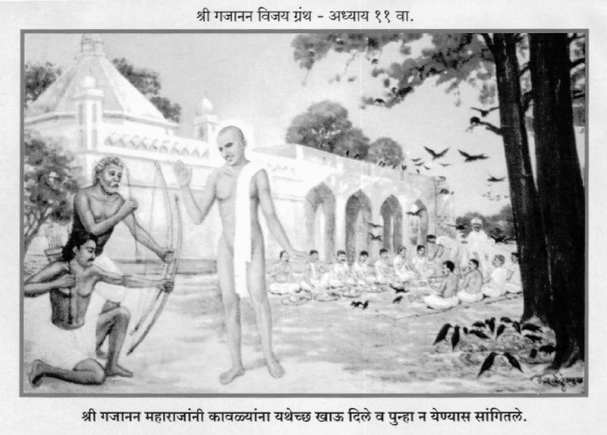

॥ अध्याय ११॥

।।श्रीगणेशाय नमः ।।
हें ओंकाररूपा पशुपती ।
हे भवानीवरा दक्षिणामूर्ति ।
ब्रह्मांडांत जितुक्या विभूति ।
तितुकी रूपें तुझीं देवा ।।१।।
तुझें रूप जें निराकार।
जेणें हें व्यापक चराचर।
जें सर्वस्वीं आधार ।
अविद्या माया प्रकृतीला ।।२।।
तें स्वरूप जाणावया ।
अशक्य आहे देवराया ।
म्हणून तूं करण्या दया।
सगुण रूपें धरलीस ।।३।।
जैसें ज्याला वाटत ।
तैसें तो तुला भाग देत।
नामामुळें तुजप्रत।
भिन्नत्व ये ना कधींहीं ।।४।।
शैव तुला शिव म्हणती ।
ब्रह्म बोलती वेदान्ती।
रामानुजांचा सीतापती।
वैष्णवांचा विष्णू तूं ।।५।।
उपासनेप्रमाणें।
नांवे मिळाली तुजकारणें।
परी तूं अभिन्नपणें।
सर्वांठायींच गवससी ।।६।।
तूं सोमनाथ विश्वेश्वर ।
हीम केदार ओंकार।
क्षिप्रातटाकीं साचार।
महांकाल तूंच की ।।७।।
नागनाथ वैजनाथ ।
घृष्णेश्वर वेरुळांत ।
त्र्यंबक तुला म्हणतात।
गोदावरीच्या तटाकीं ।।८।।
तूं भीमाशंकर ।
मल्लिकार्जुन, रामेश्वर।
तूं गोकर्णरूपी शंकर ।
तूं महादेव शिंगणापुरीं ।।९।।
त्या अवध्यांकारण ।
असो माझें साष्टांग नमन ।
माझ्या त्रितापांचें हरण ।
शीघ्र करी दीनबंधो ।।१०।।
देवा तुम्ही कुबेराला ।
क्षणांत धनपती केला ।
मग माझ्याविषयीं कां हो पडला।
प्रश्न तुम्हांसी गिरिजापते ? ।।११।।
बाळकृष्णाच्या सदनासी।
समर्थ आले दुसरें वर्षी।
त्या बाळापुरासी।
दासनवमीकारणें ।।१२।।
सुकलाल बाळकृष्ण।
या बाळापुरालागून ।
निस्सीम भक्त होते दोन।
त्यांची सरी न ये कोणा ।।१३।।
या वेळीं बरोबर।
होते पाटील भास्कर।
बाळाभाऊ, पितांबर।
गणू, जगदेव, दिंडोकार ।।१४।।
उत्सव दासनवमीचा।
सांग झाला तेथ साचा।
दैवयोग भास्कराचा ।
तेथेंच आला ओढवून ।।१५।।
एक कुत्रें पिसाळलेलें।
भास्करा येऊन चावलें।
तेणें लोक इतर भ्याले।
म्हणती आतां हा पिसाळेल ।।१६।।
उपाय अवघे व्यावहारिक ।
भास्करासी केले देख।
कोणी म्हणती निःशंक।
डॉक्टरा धाडा बोलावणें ।।१७।।
भास्कर म्हणें ते अवसरीं ।
वैद्याची ना जरुरी खरी।
माझा डॉक्टर आसनावरी ।
बैसला आहे गजानन ।।१८।।
त्याचकडे मजला न्यावें ।
वृत्त अवघें कळवावें ।
ते सांगतील तें ऐकावें।
आपला हेका करूं नका ।।१९।।
गजाननांचे समोर ।
आणिला पाटील भास्कर ।
बाळाभाऊनें समाचार ।
अवघा समर्थांस श्रुत केला ।।२०।।
तो अवघा ऐकून ।
महाराज वदले हासून ।
हत्या, वैर आणि ऋण ।
हे कोणासी चुकेना ।।२१।।
सुकलालच्या गाईठायी।
द्वाडपणा जो होता पाही।
तो या भास्करें लवलाही।
शेगांवीं दवडिला ।।२२।।
तें तिचें द्वाडपण।
कुत्रें येथें झालें जाण ।
तेंच चावलें येऊन।
या पाटील भास्कराला ।।२३।।
तिचा हरण्या द्वाडपणा।
मशीं यानें केली प्रार्थना।
इचें प्यावया दूध जाणा।
ऐसा भास्कर मतलबी ।।२४।।
दूध पिता वाटलें गोड ।
आतां कां रे चालले जड।
नको ठेवूंस पडदा आड।
वांचवूं कां मी सांग तुला ? ।।२५।।
हें कुत्रें निमित्त झालें।
तुझें आयुष्य मुळींच सरलें ।
आतां पाहिजे प्रयाण केलें।
तूं या सोडून मृत्यूलोकां ।।२६।।
जरी इच्छा असेल मनीं ।
वांचण्याची तुजलागोनी ।
तरी तुझें मी यापासूनी।
रक्षण वेड्या करीन ।।२७।।
परी ती होईल उसनवारी ।
जन्ममृत्यूची बाळा खरी ।
या अशाश्वताच्या बाजारीं।
देणे घेणें चालतें ।।२८।।
बोल आतां झडकर ।
काय तुझा विचार ।
ऐसी कधीं ना येणार।
पर्वणी ती जाण तुला ।।२९।।
भास्कर बोले त्यावरी।
मी अजाण सर्वतोपरी।
जें असेल अंतरीं।
आपुल्या तेंच करावें ।।३०।।
लेंकुराचें अवघें हित।
माता एक तें जाणत।
ऐसें एक्या अभंगांत।
श्रीतुकोबा बोलले ।।३१।।
मी आपले लेंकरूं।
म्हणून विनंती कशास करूं ?।
तूं अवध्या ज्ञानाचा सागरू।
अवघें कांहीं कळतें तुला ।।३२।।
ऐसें ऐकतां भाषण ।
संतोषले गजानन।
खऱ्याप्रती समाधान।
खरें बोलतां होतसे ।।३३।।
कोणी म्हणाले गुरुराया ।
भास्करासी वांचवा सदया ।
या कुत्र्यापासूनिया।
तो आपुला भक्त असे ।।३४।।
महाराज म्हणती त्याकारण।
हेंच तुझें अज्ञान ।
अरे वेड्या जन्ममरण ।
हीच मुळीं भ्रांति असे ।।३५।।
जन्मे न कोणी, मरे न कोणी ।
हें जाणावयालागुनी ।
परमार्थाचा उपाय जाणी।
शास्त्रकारें कथन केला ।।३६।।
त्याचाउपयोग करावा।
मोह समूळ सोडावा।
प्रारब्धभोग भोगावा ।
निमूटपणें हेंच बरें ।।३७।।
संचित-प्रारब्ध-क्रियमाण।
हें भोगल्यावाचून।
या बद्ध जीवालागून ।
सुटका होणें मुळींच नसे ।।३८।।
पूर्वजन्मीं जें करावें।
तें या जन्मीं भोगावें।
आणि ते भोगण्यासाठीं यावें।
जन्मा हा सिद्धान्त असे ।।३९।।
या जन्मीं जें करावे।
तें पुढच्या जन्मास उरवावें।
असे किती सांग घ्यावे।
फेरे जन्ममृत्यूचें ? ।।४०।।
पूर्वजन्मींचे उर्वरित ।
भास्कराचें न उरलें सत्य ।
तो अवघ्यापून झाला मुक्त।
मोक्षास जायाकारणें ।।४१।।
म्हणून आग्रह करूं नका ।
मार्ग त्याचा आडवूं नका।
काय भास्करासारखा ।
भक्तराणा जन्मे पुन्हां ।।४२।।
पूर्वजन्मीचें याचें वैरी ।
कुत्रें होतें निर्धारीं ।
म्हणून तें या बाळापुरीं ।
चावते झाले भास्करास ।।४३।।
त्यानें अवघा आपुला।
डाव येथें साधिला ।
तैसा जरी शेष उरला।
द्वेष मनीं भास्कराच्या ।।४४।।
तरी तो त्याचा द्वेष।
कारण पुढील जन्मास।
कारण होईल भास्करास।
दावा आपुला उगवावया ।।४५।।
म्हणून पूर्वजन्मींचे वैर सरलें।
आतां न कांहीं शेष उरलें।
या भास्कराकारण भलें ।
अवघ्या उपाधि निरसल्या ।।४६।।
आतां मी इतकेंच करितो ।
दोन महिने वांचवितों।
याला न पिसाळूं देतो ।
श्वानविषापासून ।।४७।।
तें न मी केलें जरी।
हा जन्मास येईल पुन्हां परी।
दोन महिने भूमिवरी।
उरलें आयुष्य भोगावया ।।४८।।
ऐसें ज्ञान ऐकिलें।
ते कित्येकांस नाहीं पटलें।
मात्र बाळाभाऊ आनंदले।
त्या बोधातें ऐकूनी ।।४९।।
भास्करा तूं धन्य धन्य ।
संतसेवा केलीस पूर्ण ।
चुकले तुझें जन्ममरण।
काय योग्यता वानूं तुझी? ।।५०।।
ऐसा प्रकार झाल्यावरी ।
मंडळी आली शेगांवनगरी ।
भास्कर बोले मधुरोत्तरीं ।
महाराजांच्या भक्तगणा ।।५१।।
बाळापूरची हकीकत।
सांगे प्रत्येका इत्थंभूत।
माझी विनंती जोडून हात ।
हीच तुम्हां भास्कर म्हणे ।।५२।।
महाराज लाधलें शेगांवा ।
याचा विचार करावा ।
या कीर्तीचा अमोल ठेवा।
सांभाळा स्मारक करून ।।५३।।
त्यांना स्मारकाची जरुरी नाही।
तें पुढीलांसाठीं पाहीं।
तें स्मारक साक्षी देई ।
त्यांच्या अमोल साधुत्वाची ।।५४।।
पाहा आळंदीस ज्ञानेश्वर ।
समर्थ सज्जनगडावर।
पवित्र केलें देहूनगर।
त्या तुकोबारायानें ।।५५।।
त्यांचीं स्मारकें त्या त्या ठाया।
ठेविलीं भव्य करूनिया ।
तोच पथ अनुसराया।
तुम्ही झटावें मनापासून ।।५६।।
ऐसें प्रत्येका सांगत ।
भास्कर राहिला निवांत ।
परी त्याच्या मनांत ।
ऐसें आले एकदां ।।५७।।
हें मला हो हो म्हणती।
माझी ऐकून विनंती।
परी शंका येत चित्तीं।
हो म्हणण्याची यांची मला ।।५८।।
त्यानें एकदां ऐसे केलें ।
अवघ्या लोकांस मिळविलें ।
एक्या ठायीं मठांत भले ।
महाराजांच्या अपरोक्ष ।।५९।।
बंकटलाल पाटील हरी ।
मारुती चंद्रभान कारभारी।
जो खंडुजींच्या दुकानावरी ।
होता कारभार करीत ।।६०।।
श्रीपतराव बावीकर ।
ताराचंद साहुकार।
आणि मंडळी होती इतर ।
नांवे कुठवर सांगावी? ।।६१।।
मिळवुनिया त्या लोकांला।
भास्करें पदर पसरीला ।
माझा आतां संबंध उरला।
दोन महिनेच तुमच्याशीं ।।६२।।
माझ्या मनीं ऐशी आस।
समर्थांचें स्मारक खास ।
भव्य व्हावें वन्हाडास ।
या शेगांवामाझारीं ।।६३।।
तुम्हीं हें करितों म्हणा।
तेणे आनंद माझ्या मना।
होऊन सुखें करीन गमना।
मी वैकुंठाकारणें ।।६४।।
संतसेवा कधींही।
अनाठायीं जाणार नाहीं।
इच्छा जयाची ज्या ज्या होई।
ती ती संत पुरविती ।।६५।।
स्मारक ऐसें करावें।
अवघ्यांनीच वाखाणावें।
पाहून त्या डोलावें।
प्रत्येकाने आपुल्या मनीं ।।६६।।
ऐसेंच स्मारक करण्याची ।
शपथ वाहा समर्थांची।
ही विनंती अखेरची।
माझी ती मान्य करा ।।६७।।
तें अवध्यांनीं कबूल केलें।
भास्कराचें स्थिरावलें।
यायोगें तें चित्त भलें।
रुखरुख मनाची संपली ।।६८।।
उत्तरोत्तर आनंदवृत्ती ।
भास्कराची वाढत होती।
जैसी लेकुरें आनंदती।
पुढील सणाच्या आशेनें ।।६९।।
माघ वद्य त्रयोदशीस ।
महाराज वदले भास्करास।
चाल त्र्यंबकेश्वरास।
जाऊं आपण शिवरात्रीला ।।७०।।
तो त्र्यंबकराजा कर्पूरगौर।
भवभवांतक भवानीवर ।
जो आहे झाला स्थिर ।
गोदावरीच्या तटातें ।।७१।।
ते ज्योतिर्लिंग मनोहर ।
करी पातकाचा संहार।
नको करूंस आतां उशीर।
जाऊं गंगास्नानाला ।।७२।।
भास्करा, त्या त्र्यंबकेश्वरीं ।
पहाड एक ब्रह्मगिरी।
जेथें औषधी नानापरी।
बहुसाल असती उगवलेल्या ।।७३।।
त्या ब्रह्मगिरीवर स्थित ।
आहेत पहा गहिनीनाथ ।
ज्यांना आहेत अवगत।
गुणधर्म औषधींचे ।।७४।।
वेड्या कुत्र्याच्या विषावरी ।
तेथें औषधी आहे खरी।
तिचा उपयोग सत्वरीं।
करून पाहूं येधवा ।।७५।।
भास्कर म्हणे गुरुनाथा ।
आतां औषधी कशाकरतां ? ।
तुमची आहे अगाध सत्ता ।
औषधीहून आगळी ।।७६।।
आपुल्या कृपेनें भलें।
विष बाळापुरीच निमालें ।
आयुष्याचे आहेत उरले ।
दोन महिनेच आतां कीं ।।७७।।
म्हणून वाटे मजप्रती।
शेगांवींच राहूं गुरुमूर्ती ।
त्र्यंबकेश्वर आम्हाप्रती।
तुम्हीच आहात साक्षात् ।।७८।।
गोदावरी तुमचे चरण ।
तेथेंच मी करी स्नान ।
अन्य तीर्थांचे प्रयोजन ।
मला न आतां राहिले ।।७९।।
ऐसी ऐकतां त्याची वाणी ।
समर्थ वदले हांसोनी ।
हें जरी खरें जाणी ।
तरी तीर्थमहिमा मानावा ।।८०।।
चाल नको करूं उशीर ।
पाहूं तो त्र्यंबकेश्वर ।
बाळाभाऊ, पितांबर।
यांसही घे बरोबरी ।।८१।।
मग ती मंडळी निघाली ।
शेगांवाहून भलीं।
शिवरात्रीस येती झाली ।
त्र्यंबकेश्वराकारणें ।।८२।।
कुशावर्ती केलें स्नान।
घेतलें हराचें दर्शन ।
गंगाद्वारा जाऊन ।
पूजन केलें गौतमीचें ।।८३।।
वंदिली माय निलांबिका ।
तेवी गहिनीनाथ देखा।
तेथून आले नाशिका।
गोपाळदासास भेटावया ।।८४।।
हा गोपाळदास महंत ।
काळ्या रामाच्या मंदिरांत ।
धुनी लावून द्वारांत ।
पंचवटीच्या बसलासे ।।८५।।
राममंदिरासमोर ।
एक पिंपळाचा होता पार ।
शिष्यांसहित साधुवर।
तेथें जाऊन बैसले ।।८६।।
गोपाळदासास आनंद झाला ।
बोलले जवळच्या मंडळीला।
आज माझा बंधु आला।
वन्हाडांतून गजानन ।।८७।।
जा घ्या त्याचें दर्शन ।
अनन्यभावें करून।
माझी ही भेट म्हणून।
नारळसाखर त्यांसी द्या ।।८८।।
हा हार घाला कंठांत ।
तो मी एक साक्षात्।
देह भिन्न म्हणून द्वैत।
आम्हां उभयतीं मानूं नका ।।८९।।
शिष्यांनी तैसेंच केलें ।
दर्शन घ्याया अवघे आले ।
कंठामाजी घातिले।
दिलेल्या पुष्पहाराला ।।९०।।
नारळ आणि खडीसाखर।
ठेविली स्वामींसमोर ।
ती पाहून गुरुवर ।
ऐसें बोलले भास्कराला ।।९१।।
हा प्रसाद अवध्यांस वाटी ।
परी न होऊ देई दाटी ।
माझ्या बंधूची झाली भेटी।
आज या पंचवटीत ।।९२।।
माझें येथील काम झालें ।
आतां नाशकाचे राहिलें।
म्हणून पाहिजे तेथें गेलें।
धुमाळ वकीलाच्या घरा ।।९३।।
महाराज आले नाशकांत ।
लोक दर्शना जमले बहुत ।
बारीक सारीक गोष्टी अमित ।
तेथें असता जहाल्या ।।९४।।
त्या अवघ्या सांगतां ।
विस्तार होईल उगीच ग्रंथा।
म्हणून देतों संक्षेप आतां ।
त्याची क्षमा करा हो ।।९५।।
तेथें राहून कांही दिवस ।
महाराज आले शेगांवास ।
तो अडगांवी नेण्यास ।
झ्यामसिंग पातला ।।९६।।
त्यानें आग्रह केला फार ।
समर्थे दिले उत्तर ।
रामनवमी झाल्यावर ।
येऊं आम्ही अडगांवा ।।९७।।
आता तूं जावें परत ।
उगा न पडे आग्रहांत।
झ्यामसिंग मुळींच भक्त ।
निस्सीम होता समर्थांचा ।।९८।।
तो आला तैसा परत गेला ।
आपुल्या त्या अडगांवाला ।
पुन्हा श्रोते येतां झाला ।
रामनवमीस शेगांवीं ।।९९।।
उत्सव करून शेगांवांत।
समर्थांना शिष्यांसहित ।
आला घेऊन अडगांवांत ।
हनुमानजयंतीकारणें ।।१००।।
अडगांवीं असतां समर्थस्वारी ।
चमत्कार झाले नानापरी ।
एके दिवशीं दोन प्रहरी।
भास्कर लोंळविला फुपाट्यात ।।१।।
छातीवरी बैसून।
भास्करा केलें ताडन ।
लोक पहाती दुरून।
परी जवळी कोणी जाईना ।।२।।
बाळाभाऊ जवळ होता।
तो म्हणाला सद्गुरुनाथा ।
भास्करासी सोडा आतां ।
बेजार झाला उन्हानें ।।३।।
तैं म्हणाला भास्कर ।
बाळाभाऊ न जोडा कर।
माझा हा साक्षात् ईश्वर ।
काय करील तें करू दे ।।४।।
लोकांसी वाटती चापट्या दिल्या।
मला होतात गुदगुल्या ।
अनुभवाच्या गोष्टी भल्या ।
अनुभवीच जाणती ।।५।।
पुढें घेऊन भास्करासी ।
महाराज आले बिन्हाडासी ।
त्या अडगांव ग्रामासी ।
उतरलेल्या ठिकाणास ।।६।।
बाळाभाऊस बोलले।
अवघे आतां दोन उरले।
भास्कराचे दिवस भले।
पंचमीला जाईल तो ।।७।।
आज मीं जें केलें कृत्य ।
ताडनाचें रानांत।
तें कां हें तुजप्रत।
आलें असेल कळोनी ।।८।।
तुजला या भास्करानीं।
मारविलें होतें छत्रीनीं ।
शेगांवी माझ्या करानी ।
तें आहे कां ध्यानात ? ।।९।।
ते क्रियमाण नासावया ।
त्यास मारिले ये ठायां ।
ह्या एकाच गोष्टीवांचूनिया ।
अन्य नव्हता हेत कांहीं ।।११०।।
उत्सव पूर्ण झाल्यावर ।
त्या अडगांवींचा साचार ।
काय घडला प्रकार ।
तो आतां परियेसा ।।११।।
उत्सवाचा काला झाला ।
वद्य पंचमी दिवस आला।
एक प्रहर दिवसाला।
समर्थ म्हणती भास्करासी ।।१२।।
भास्करा तुझें प्रयाण ।
आज दिवशी आहे जाण ।
पद्मासन घालून।
पूर्वाभिमुख बैसावें ।।१३।।
चित्त अवघें स्थिर करी।
चित्तीं साठवावा हरी।
वेळ आली जवळ खरी।
आतां सावध असावें ।।१४।।
इतर जनाकारण ।
म्हणूं लागले करा भजन ।
"विठ्ठल विठ्ठल नारायण"।
ऐसें उच्च स्वरानें ।।१५।।
हा तुमचा बंधु भला।
जातो आज वैकुंठाला ।
त्याच्या करा पूजनाला ।
माळबुक्का वाहून ।।१६।।
भास्करें घातलें पद्मासन ।
नासाग्रीं दृष्टि ठेवून ।
वृत्ति अवघ्या केल्या लीन ।
अंतर्मुख होऊनिया ।।१७।।
भक्त भास्करा पूजिती ।
माळा बुक्का वाहती।
तें कौतुक पाहाती ।
समर्थ दूर बैसून ।।१८।।
भजन झालें एक प्रहर।
माध्यान्हीस आला दिनकर ।
महाराजांनी "हरहर" ।
शब्द केला मोठ्यानें ।।१९।।
त्यासरसा प्राण गेला ।
भास्कराचा वैकुंठाला ।
संतांनीं हाती धरिलें ज्याला ।
तो पाहुणा हरीचा ।।१२०।।
लोक पुसती महाराजांस ।
कोठे करणें समाधीस।
या भास्कराच्या शरीरास ।
कोठें न्यावें ठेवावया ? ।।२१।।
समर्थ अवध्यांस सांगती ।
द्वारकेश्वर जो पशुपती।
ज्याच्या सन्निध आहे सती।
तेथे ठेवा भास्कराला ।।२२।।
ऐसी आज्ञा होतांक्षणी ।
विमान बांधिलें लोकांनी।
केळीचे खांब लावूनी ।
चहूं बाजूंस विबुध हो ।।२३।।
आंत ठेविलें कलेवर ।
पुढे भजनाचा होय गजर।
मिरवित आणिला भास्कर ।
द्वारकेश्वराचियापाशीं ।।२४।।
सांगविधि समाधीचा ।
ते ठायीं झाला साचा ।
लोक म्हणती महाराजांचा ।
परमभक्त गेला हो ।।२५।।
दुसरें दिवसापासून ।
समाधीच्या सन्निध जाण ।
होऊं लागले अन्नदान।
गोरगरीबांकारणें ।।२६।।
स्थान द्वारकेश्वराचें।
अडगांवाच्या सन्निध साचे ।
अंतर एक मैलाचें।
गांवापासून उत्तरेस ।।२७।।
जागा द्वारकेश्वराची।
परमरमणीय होती साची।
झाडी चिंचवृक्षांची।
होती विशेष ते ठायां ।।२८।।
निंब अश्वत्थ मांदार ।
आम्र वट औदुंबर।
ऐसे वृक्ष होते इतर ।
शिवाय कांहीं फुलझाडें ।।२९।।
अडगांव अकोलीच्या मध्यंतरी ।
हें ठिकाण निर्धारी ।
तेथें समाधि दिधली खरी ।
समर्थांनीं भास्कराला ।।१३०।।
दहा दिवस अन्नदान।
झालें याचें वर्णन।
तुम्हीं नुकतेंच केलें श्रवण।
संतभंडारा नांव ज्याचें ।।३१।।
चिंचवृक्षांच्या सावलींत।
जेवाया बसें पंगत ।
तयीं कावळे अतोनात।
त्रास देऊं लागले ।।३२।।
काव काव ऐसें करिती।
द्रोण पात्रींचे उचलून नेती।
मलोत्सर्ग तोही करिती।
जेवणारांच्या अंगावर ।।३३।।
त्या योगें लोक त्रासले ।
कावळ्यास हाकूं लागले ।
भिल्लांनी ते तयार केले ।
तीरकमटे त्या मारावया ।।३४।।
तईं बोलले गजानन ।
अवघ्या लोकांलागून।
नका मारूं त्याकारण।
अपराध त्यांचा कांही नसे ।।३५।।
या भंडाऱ्यांत येण्याचा ।
हेतु इतकाच आहे त्यांचा।
प्रसाद आपणा भास्कराचा ।
इतरांपरीच मिळावा ।।३६।।
कां की हा भास्कर ।
वैकुंठीं गेला साचार।
हा पितृलोकावर।
नाहीं मुळींच राहिला ।।३७।।
दहा दिवसपर्यंत ।
प्राण अंतरिक्षांत।
राहे परिभ्रमण करित ।
सपिंडी होतां जाय पुढें ।।३८।।
त्या अकराव्या दिवशीं ।
बळी देती कावळ्याशीं ।
काक जेव्हां स्पर्शेल त्यासी।
तेव्हांच प्राण जातो पुढें ।।३९।।
त्या बलीदानाचें।
कारण भास्करा नुरलें साचें।
म्हणून या कावळ्यांचे।
पित्त गेले खवळून ।।१४०।।
आत्मा या भास्कराचा।
मुळींच मुक्त झाला सांचा ।
तो पाहुणा वैकुंठीचा ।
झाला आहे येधवां ।।४१।।
या सोमसूर्य लोकांचे ।
कारण त्यासी नुरलें साचें।
म्हणून पिंडदानाचें।
नुरलें पहा प्रयोजन ।।४२।।
जयाला न ऐसी गती।
त्याच्यासाठीं पिंड देती।
कावळ्यांची वाट पाहाती।
पिंड ठेवून कलेशावर ।।४३।।
म्हणून कावळे रागावले ।
त्यांनी हे जाणीतलें ।
भास्करानें गमन केलें ।
एकदम वैकुंठ लोकाला ।।४४।।
म्हणून आम्हां प्रसाद त्यांचा।
मिळूं द्या या भंडाऱ्याचा।
ऐसा विचार कावळ्यांचा।
दिसतो या कृतीनें ।।४५।।
तुम्ही त्यांस मारूं नका ।
मीच तया सांगतो देखा ।
अहो जिवांनो माझे ऐका।
गोष्ट आतां सांगतों जी ।।४६।।
तुम्ही उद्यापासोन।
वर्ज्य करा हे ठिकाण।
ना तरी भास्करालागून ।
येईल माझ्या कमीपणा ।।४७।।
आज प्रसाद घेऊन।
तुम्ही तृप्त व्हा अवघे जण ।
मात्र उद्यांपासोन ।
या स्थळासी येऊं नका ।।४८।।
ऐसें महाराज बोललें।
तें भाविकांसी अवघें पटलें ।
परि कुत्सित जे कां बसले ।
होते त्या मंडळींत ।।४९।।
ते एकमेकांलागुनी ।
म्हणते झालें हांसोनी।
ही गजाननानें केली वाणी।
अस्थानीं कीं निरर्थक ।।१५०।।
पक्षी कुठे कां वागतात।
मानवाच्या आज्ञेंत ?।
पाहूं याची प्रचीत ।
उद्यां मुद्दाम येऊनी ।।५१।।
हे वेडे कांहीं बोलती।
भाविकां नादी लाविती।
आपले स्तोम माजविती।
संतत्वाचें निरर्थक ।।५२।।
अहो साजेल तें बोलावें।
जें कां पचेल तेंच खावें।
उसनें न कधी आणावें ।
अवसान तें अंगांत ।।५३।।
दुसरे दिवशी ते कुत्सित ।
मुद्दाम पाहाया आले तेथ ।
तों एकही ना दृष्टीप्रत।
पडला त्यांच्या कावळा ।।५४।।
मग मात्र चकित झाले।
समर्थांसी शरण आले।
बारा वर्षे तेथ भले।
कावळे न आले श्रोते हो ।।५५।।
चौदा दिवस झाल्यावरी ।
गजानन फिरलें माघारीं।
येते झाले शेगांव नगरी ।
आपल्या उर्वरित शिष्यांसह ।।५६।।
श्रोते त्या शेगांवांत ।
एक गोष्ट घडली अघटित ।
ती ऐका सावचित्त।
सांगतों मी येधवां ।।५७।।
होतें साल दुष्काळाचें।
म्हणून एका विहिरीचें ।
काम चाललें खोदण्याचें।
सुरुंगाते लावून ।।५८।।
विहीर दोन पुरुषांवर ।
गेली खोल साचार।
खडक काळा लागला थोर।
गती खुंटली पहारीची ।।५९।।
म्हणून भोकें करून।
आंत दारू ठांसून।
सुरुंगाच्या साह्ये करून।
काम फोडण्याचें सुरूं झालें ।।१६०।।
चारी बाजूंस भोकें चार।
केली पहारीनें तयार।
दारू ठासिली अखेर।
आंत दोऱ्या घालूनी ।।६१।।
एरंड पुंगळ्या पेटवून।
सोडल्या चारी दोऱ्यांतून।
तो मध्येंच बैसल्या अडकून।
दोऱ्यांचीया गांठीवरी ।।६२।।
पुंगळी खालीं जाईना ।
दारूस विस्तव लागेना ।
पाणी दम धरीना ।
आलें जवळीं सुरुंगाच्या ।।६३।।
तैं कामावरचा मिस्तरी।
विचार करी अंतरीं।
सुरुंगास लागल्या वारी।
सुरुंग वाया जाईल कीं ।।६४।।
म्हणून गणू जवऱ्याला।
मिस्तरी तो बोलला।
तूं उतरून विहिरीला।
पुंगळ्या थोड्या सरकीव ।।६५।।
आणि तूं येई लौकर वरी ।
पुंगळ्या जातील तोवरी।
बाराचिया शेजारी।
म्हणजे काम होईल ।।६६।।
त्या पुंगळ्या सरकवण्यासी।
कोणी न धजे जावयासी।
म्हणून या गणू जवऱ्यासी।
मिस्तरीनें दटाविलें ।।६७।।
काय करितो बिचारा ।
दारिद्रय होतें ज्याच्या पदरां ।
त्याच्यावरी चाले जोरा ।
यज्ञास बळी बोकडाचा ।।६८।।
या गणू जवऱ्याची ।
निष्ठा समर्थांवरी साची ।
आज्ञा होतां मिस्तरीची।
गणू आंत उतरला ।।६९।।
एक पुंगळी सरकविली।
ती तात्काळ तळा गेली।
दारूप्रती जाऊन भिडली।
गणू आंत सांपडला ।।१७०।।
दुसरीस जों घाली हात ।
पुंगळी सरकवण्याप्रत।
तों पहिला सुरुंग उडाला सत्य।
मग काय विचारतां ? ।।७१।।
गणू म्हणे विहिरींतून।
समर्थां ये धांवून ।
माझें आतां रक्षण ।
तुझ्यावीण कोण करी? ।।७२।।
विहिरीमाजी धुराचा ।
डोंब झाला होता साचा।
दुसरा सुरुंग पेटण्याचा ।
अवधि उरला थोडका ।।७३।।
तों गणू जवऱ्या भली ।
कपार हाती लागली ।
त्या कपारींत बैसली ।
स्वारी गणू जवऱ्याची ।।७४।।
एकामागून एकांनी।
पेट घेतला सुरुंगांनी ।
उडाले सुरुंग ऐसे तिन्ही।
दगड अपार निघाले ।।७५।।
लोक जे कां होते वरती।
ते बोलले ऐशा रिती।
बहुधा मिळाली असेल मुक्ती।
विहिरीमाजी गणूला ।।७६।।
छिन्न भिन्न शरीर।
झाले असेल साचार ।
डोकावून पाहाती नारीनर ।
आंत गणू जवऱ्याला ।।७७।।
तो कोठें दिसेना ।
जनांच्या नाना कल्पना।
दगडाप्रमाणे गणू जाणा।
उडाला असेल बाहेर ।।७८।।
त्याचें आसमंत भागांत।
कोठें तरी असेल प्रेत।
पडलेलें त्या शोधण्याप्रत।
माणूस कोणी पाठवा ।।७९।।
मिस्तरीचा शब्द ऐकिला ।
आंतून गणू बोलला।
अहो मिस्त्री नाहीं मेला।
गणू आहे विहिरींत ।।८०।।
गजाननांच्या कृपेनीं।
मी वाचलों या ठिकाणीं।
बसलों आहे दडोनी।
या पहा कपारींत ।।८१।।
परी कपारीच्या तोंडाला ।
धोंडा एक मोठा पडला।
त्यामुळें बाहेर मला।
येतां येत नाहीं कीं ।।८२।।
गणूचे शब्द ऐकिले।
लोक अवघे आनंदले ।
लोक खालीं उतरले।
तो धोंडा काढावया ।।८३।।
दहापांच जणांनी ।
धोंडा सरकविला पहारींनी।
गणूस बाहेर काढूनी।
घेऊन आले वरते त्या ।।८४।।
वरती येतांच गांवांत ।
गणू गेला पळत पळत ।
समर्थांच्या मठांत ।
दर्शन त्यांचे घ्यावया ।।८५।।
गणू दर्शना येतांक्षणीं।
बोलले त्या कैवल्यदानी।
गण्या कपारींत बैसोनी।
किती धोंडे उडविलेस ? ।।८६।।
त्यांत मोठा धोंडा तुला ।
रक्षण्यास येऊन बैसला।
कपारीच्या तोंडाला ।
म्हणून तूं वांचलास ।।८७।।
पुन्हां ना ऐसें साहस करी।
पुंगळीवरून सुटल्यापरी ।
मधेच तिला जाऊन करीं।
कशाही प्रसंगी धरूं नये ।।८८।।
जा तुझें गंडांतर।
आज निमालें साचार ।
गणूप्रती पाहाया इतर ।
लोक आले गांवींचें ।।८९।।
गणू म्हणे सद्गुरुनाथा।
सुरुंग चारी पेटतां।
तूंच मला देऊन हातां ।
कपारींत बैसविले ।।९०।।
म्हणून मी वांचलों ।
तुझें पाय पाहाया आलों।
ना तरी असतों मेलों ।
विहिरीमाजी गुरुराया ! ।।९१।।
ऐसें गजानन कृपेचें।
महिमान आहे थोर साचें।
तें साकल्ये वर्णण्याचें।
मसीं नाहीं सामर्थ्य ।।९२।।
श्रीदासगणूविरचित।
हा श्रीगजानन विजय नामें ग्रंथ ।
आल्हादावो भाविकांप्रत।
हेंच इच्छी दासगणू ।।१९३।।
शुभं भवतु ।।
श्रीहरिहरार्पणमस्तु ।।
।।इति श्रीगजानन विजय ग्रंथस्य एकादशोऽध्यायः समाप्तः।।